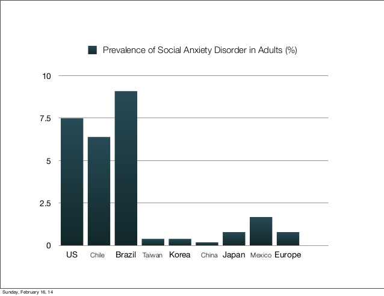
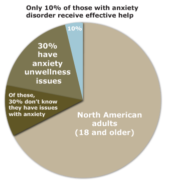
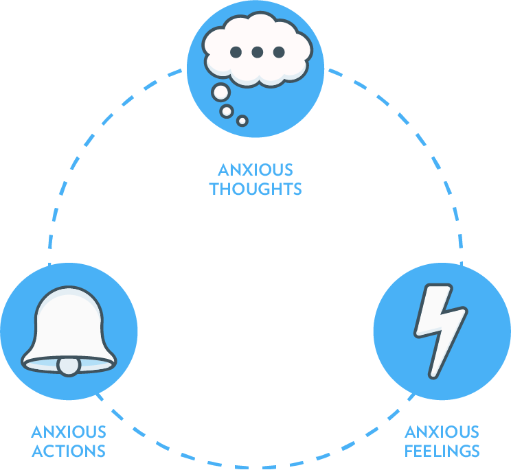

Research Essay
Focus of Research:
Social Anxiety can be described in a number of ways, most typically as extreme shyness. -Ranges from being helpful and adaptive (being very aware of their surroundings) to impairing (ruining the person’s ability to develop or maintain relationships) -Not to be confused with being just shy. Difference: Shy: is a personality trait. People who are shy do not associate their shyness with negative thoughts, and can normally function in their lives with their shyness.
About 15 million North American adults have social anxiety disorder Typical age of onset: 13 years old 36 percent of people with social anxiety disorder report symptoms for 10 or more years before seeking help



References:
Collins, S. (2015, September 1). Most Americans Don’t Know The True Danger Of Anxiety. Retrieved September 30, 2015, from http://thinkprogress.org/health/2015/09/01/3697523/anxiety-suicide-risk/
Gilbert, P. (2001). Further Methods to Challenge Negative Thoughts. In Overcoming Depression: A Step by Step Approach to Gaining Control Over Depression (2nd ed., pp. 171-187). New York: Oxford University Press.
Kant, J. (2008). Rituals, Routines, and Recovery: Living with OCD. In The Thought That Counts. New York: Oxford University Press.
Mishra, N. (2015, September 26). Is Your Anxiety Normal or a Clinical Disorder? Retrieved October 2, 2015, from http://www.thequint.com/health-fitness/2015/09/26/is-your-anxiety-normal-or-a-clinical-disorder
NyDegger, R. (2012). Treatment Methods for Specific Anxiety Disorders. In Dealing with Anxiety and Related Disorders. California: Praeger.
Richard, O. (2009). Learning New Skills. In Undoing Depression: What Therapy Doesn’t Teach You and Medication Can’t Give You (2nd ed., pp. 75-197). Little Brown and Company.
Stromberg, J. (2014, January 16). Moving to An Area With More Green Space Can Improve Your Mental Health for Years. Retrieved October 2, 2015, from http://www.smithsonianmag.com/science-nature/moving-area-with-more-green-space-can-improve-your-mental-health-years-180949348/?no-ist
Szalavitz, M. (2012, April 20). Study: Playing a Video Game Helps Teens Beat Depression. Retrieved September 30, 2015, from http://healthland.time.com/2012/04/20/study-playing-a-video-game-helps-teens-beat-depression/
Mann, S. (2013). Complex Phobias. In overcome phobias and panic attacks (p.115). Hodder & Stoughton.
Wehrenberg, M., & Steven, M. (2007). The Physical Brain and the Mind of Anxiety. In The Anxious Brain (pp. 9-39). New York: WW NORTON & Company.
Strayvnski, A. (2007). What Causes Social Phobia? In Fearing others (pp.27-50). New York, New York: Cambridge University Press.
Open Prelimary Report
Open Final Report